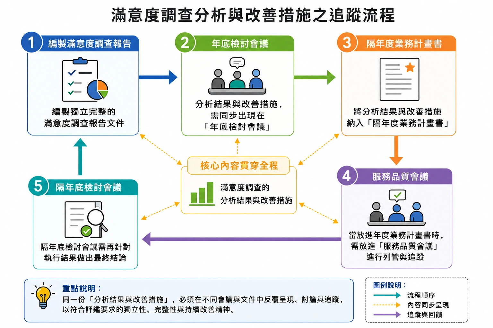
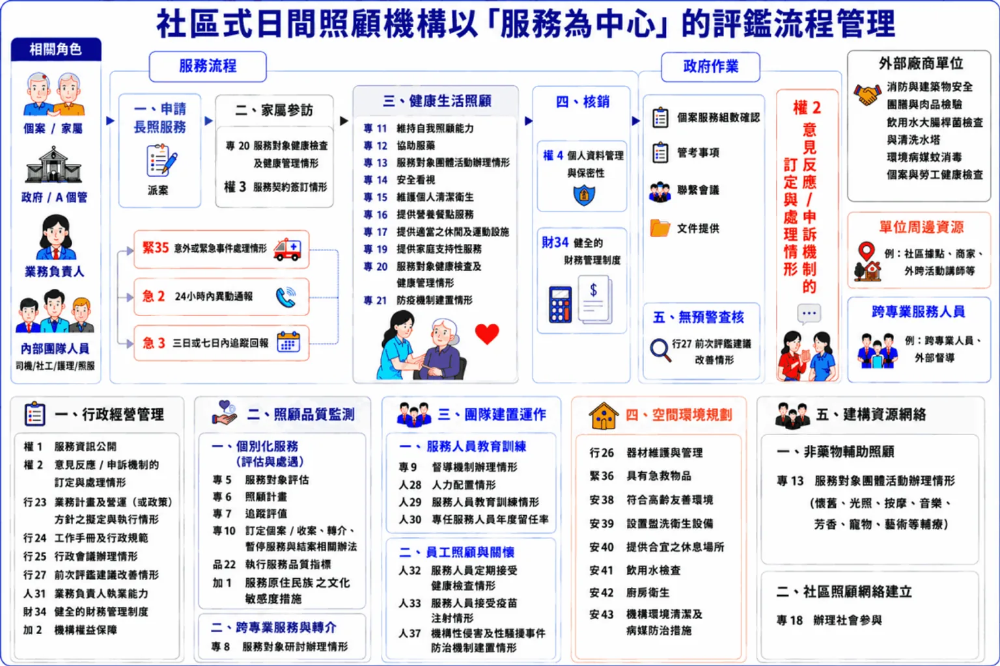

長照機構的評鑑準備與行政流程，長年來一直是機構經營管理上的重要課題。依據長期照顧服務機構評鑑辦法第 7 條第 3 項、第 4 項，以及長期照顧服務法第 39 條規定，主管機關必須對長照機構應予輔導、監督、考核、檢查及評鑑。評鑑作業的核心精神，旨在透過評鑑指標的把關，確保長照機構呈現符合規範的基礎品質標準。
然而，現行的長照機構評鑑作業，多是以行政執行的觀點出發，制度設計較傾向以「事件為中心」而非以「服務為中心」。這導致在日常服務節奏緊湊且高互動的現場，第一線從業人員難以在服務過程中，流暢地完成符合指標作業的文件紀錄。當以「事件為中心」導向的指標基準融入助人工作流程時，容易形成紀錄與文件反覆多工的情形。這也是目前業者難以將評鑑作業完整落實於日常服務流程中的主因。
面對此管理瓶頸，長照機構應將焦點放回「服務流程管理」的角度，透過以下三個面向進行調整。
一、「服務為中心」工作流程的解構與重建
以社區式長照機構（日間照顧中心）為例，機構需全面盤點與分析工作流程的所有面向與執行過程，並逐一對照評鑑指標。我們需要依據以「服務為中心」的工作流程，將指標進行拆解與重組，使其緊密貼合在日常工作當中，建構出系統性的日常工作模式。唯有透過這種「解構與重建」的過程，才能有效發展出將評鑑作業落實於日常服務的工作制度。
二、評鑑文件背後繁瑣「連動邏輯」的痛點
即便重新梳理流程，實務上仍很難完全解決「事件為中心」制度下反覆多工的現象。
以日照中心常見的「滿意度調查分析與改善措施」為例，為符合評鑑要求之文件的獨立性與完整性，相關表單背後的作業其實有點複雜：
- 編製獨立完整的滿意度調查報告文件；
- 其分析結果與改善措施，需同步出現在「年底檢討會議」及「隔年度業務計畫書」；
- 當放進年度業務計畫書時，也需放進「服務品質會議」進行列管與追蹤；
- 最後，隔年底檢討會議需針對執行結果做出最終結論。

這當中的連動邏輯性，相當考驗業務負責人對於機構整體工作流程與評鑑文件的細節掌握度。滿意度調查在機構營運中僅屬相對單純的工作事項，更遑論其他更為龐雜的營運管理與個案服務管理的工作任務。
三、「導入 AI 系統」串聯評鑑行政連動機制
在長照機構人力配置有限的現況下，若要有效減輕機構在評鑑準備上的行政負荷，導入資訊科技是一項具體可行的解決方案。
我們需要研擬出一套「長照 AI 智慧系統」，使其具備所有評鑑表單背後彼此的連動邏輯性。透過 AI 進行資料的自動串聯與檢核，才能大幅優化以事件為中心的評鑑行政作業，讓第一線夥伴與管理階層重新聚焦在以「服務為中心」的營運管理模式。
解決方案：AI 職能培訓與評鑑實作課程
當我們重新回到「以服務為中心」的概念，並將重建後的各工作流程面向結構化之後，不僅能應付評鑑，更能進一步說明清楚機構營運的核心內容。透過結構化的梳理將日照業務歸納為行政經營管理、照顧品質監測、團隊建置運作、空間環境規劃、建構資源網絡等五大工作情境。

唯有如此，機構才能真正精準分析出「社區式日間照顧業務負責人」的專業職能，並依此發展出精準的職能面試、職能培訓與職能考核。這才是根本解決當今長照機構在「選、育、留、用」的核心問題。
本文作者顏和平，現任仁德醫護管理專科學校高齡健康促進科專案講師。